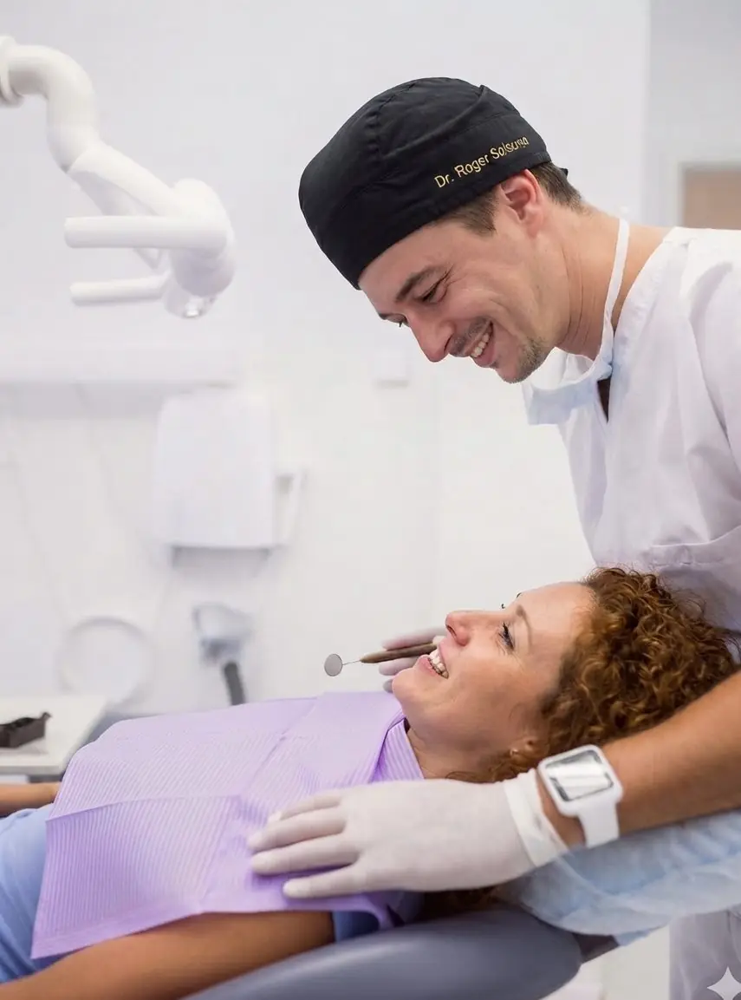
Odontòleg especialista en cirurgia oral i implantologia
Cirurgia guiada, regeneració òssia avançada i rehabilitació sobre implants. Un enfocament basat en la planificació digital, la precisió quirúrgica i la documentació rigorosa de cada cas.
Màster UEM
Cirurgia Oral Avançada
+2.400 h
Pràctica clínica supervisada
SEPES · SECIB
Ponent 2022
Lleida
Activitat actual
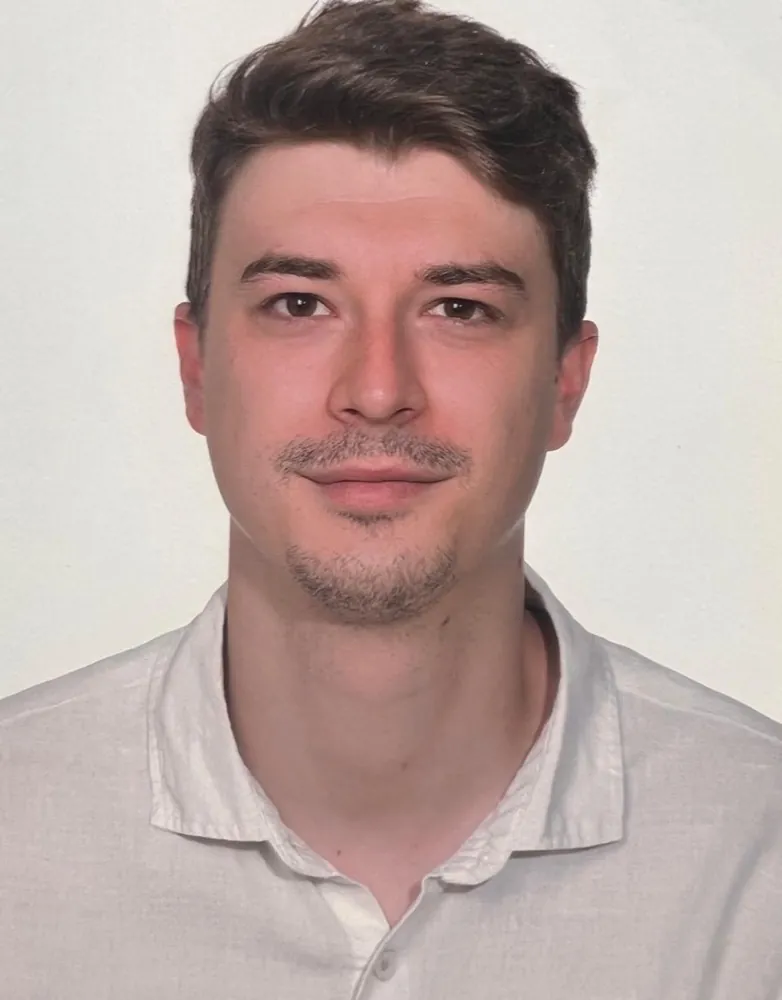
CA · ES
EN · FR
Sóc Roger Solsona Martí, odontòleg graduat per la Universitat Internacional de Catalunya (UIC) i format de manera monogràfica en cirurgia oral, implantologia i pròtesi. He completat un Màster en Cirurgia Oral Avançada, Implantologia i Pròtesi a la Universidad Europea de Madrid i formació en rehabilitació sobre implants a la New York University College of Dentistry.
La meva pràctica se centra en els casos que requereixen un abordatge quirúrgic: regeneració òssia horitzontal i vertical, tècnica de sausage, elevació de si maxil·lar, implants de càrrega immediata, implant immediat postextracció i rehabilitacions completes planificades amb CBCT i cirurgia guiada.
Entre 2022 i el juliol de 2026 vaig exercir com a implantòleg de referència en diverses consultes de l'Île-de-France (França), fent sessions quirúrgiques i donant suport als equips en casos complexos. Actualment desenvolupo la meva activitat a Lleida. Documento sistemàticament els meus tractaments: disposo d'un book de casos clínics ampli, en part recollit en aquesta pàgina.
«La cirurgia comença molt abans del quiròfan: en el diagnòstic, la planificació i la comunicació amb l'equip restaurador.»
Odontòleg · Cirurgia oral i implantologia
Procediments quirúrgics on la planificació digital i la tècnica marquen el resultat a llarg termini de la rehabilitació.
Exodòncies complexes i quirúrgiques, dents incloses i retingudes, frenectomies i petita patologia dels teixits tous i durs de la cavitat oral.
Planificació amb CBCT i flux digital, fèrules quirúrgiques, col·locació d'implants unitaris i múltiples i protocols de càrrega immediata.
Regeneració òssia guiada horitzontal i vertical, tècnica de sausage, empelts en bloc i particulats, i maneig de teixits tous per a un tancament sense tensió.
Elevació sinusal per finestra lateral i abordatge crestal, amb col·locació d'implants simultània o diferida segons la disponibilitat òssia.
Extracció atraumàtica i col·locació immediata de l'implant amb preservació de l'alvèol i segellat, reduint el nombre d'intervencions i el temps de tractament.
Rehabilitacions unitàries i completes amb ceràmica i zirconi CAD-CAM, en coordinació amb l'equip restaurador i el laboratori.
Grau, postgraus i màster orientats de manera consistent cap a la cirurgia oral, la implantologia i la pròtesi, amb més de 2.400 hores de pràctica clínica supervisada sobre pacients.
2014 – 2019
Universitat Internacional de Catalunya (UIC) · 1.115 h de pràctica clínica sobre pacients
2019
Universidad de Ciencias Médicas de Villa Clara (Cuba)
2019 – 2020
Universitat Internacional de Catalunya (UIC)
2019 – 2020
Fernando Autrán · SCOE (Societat Catalana d'Odontologia i Estomatologia)
2020 – 2022
Universidad Europea de Madrid (UEM) · 1.350 h de pràctica clínica sobre pacients
2022
New York University College of Dentistry
SEPES 2022
Sociedad Española de Prótesis Estomatológica y Estética
«Característiques i indicacions de les ceràmiques CAD-CAM. Revisió de la literatura.»
SECIB 2022
Sociedad Española de Cirugía Bucal
«Implant simultani amb la tècnica Bonering en alvèols postextracció. Revisió de la literatura.»
2018
Clínica Opción Dental · Lleida
2019 – 2020
Clínica Dental Viana · Lleida
2022 – 2023
Docali · Colomiers (França)
2023 – 2024
Centre de Santé Dentaire Porte d'Orléans · París (França)
2024 – jul. 2026
SELAS Cabinet de la Grand Place · Boulogne-Billancourt (França)
2024 – jul. 2026
SELAS Cabinet du Marché · Montrouge (França)
2026 – actualitat
Tempus Clínica Dental · Lleida
Recull de 17 casos de la pràctica pròpia, centrats en regeneració òssia, elevació de si i implantologia. Totes les imatges són fotografies intraorals i estudis radiològics de documentació clínica, sense dades identificatives del pacient.
Aquesta secció conté imatges quirúrgiques reals (camp operatori, teixits i sang) destinades a professionals del sector. Prem el botó per mostrar-les.
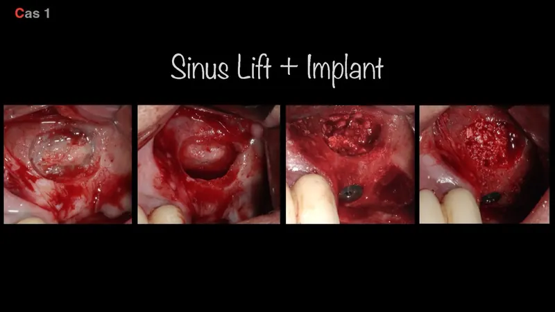
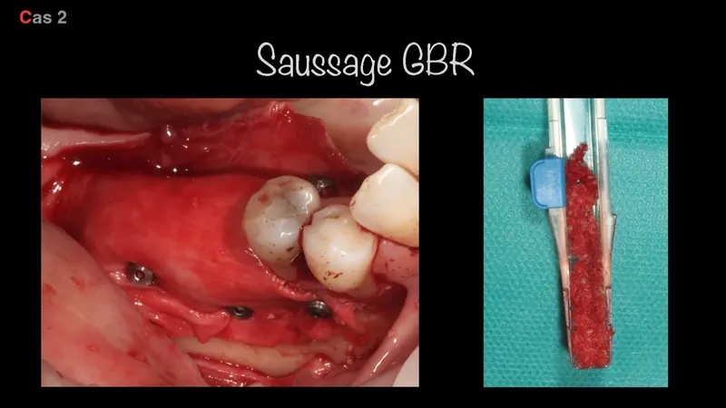
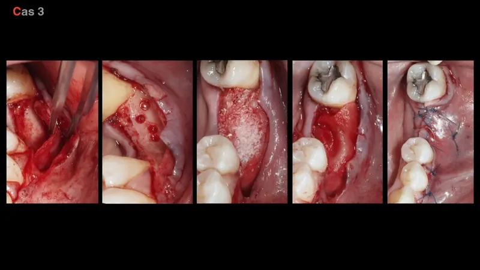
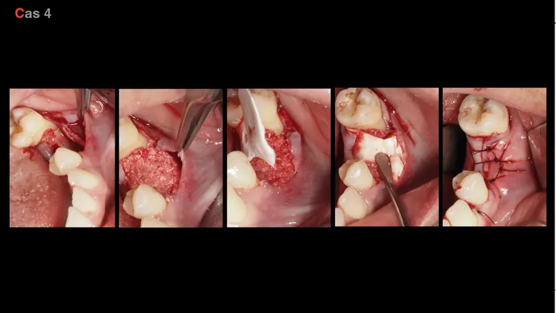
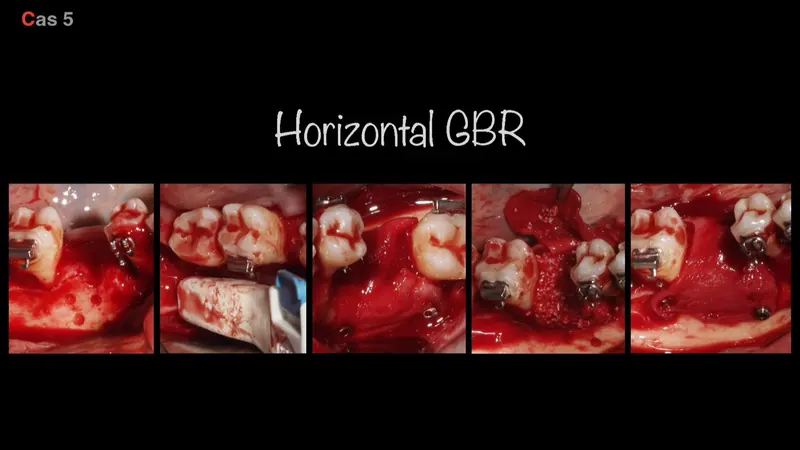
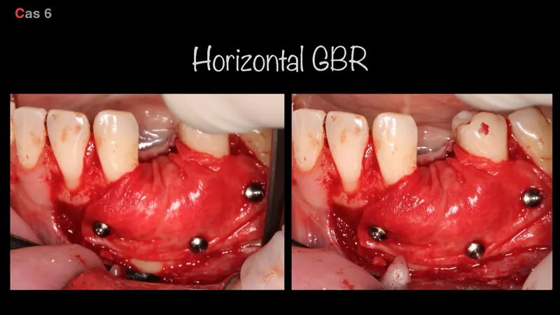
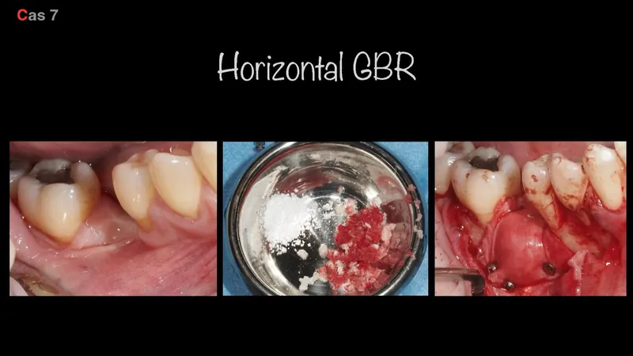
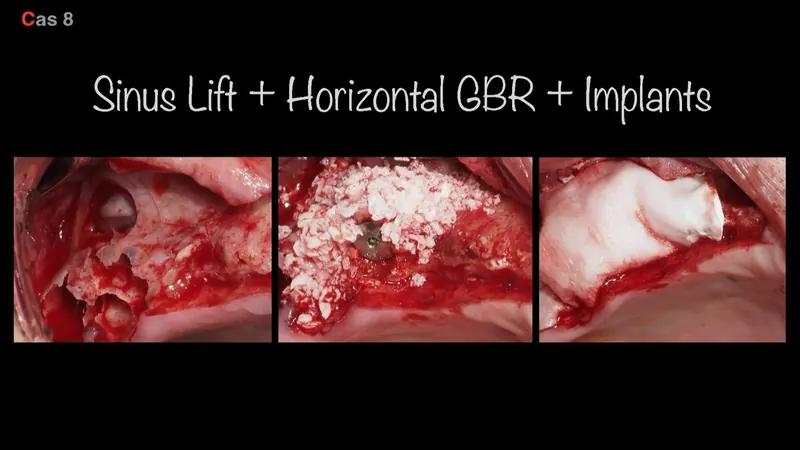
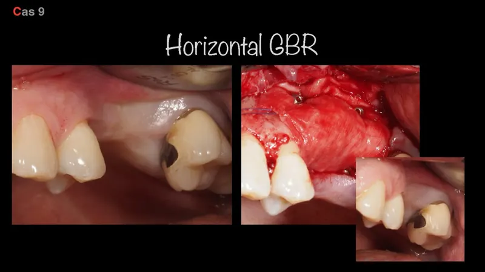
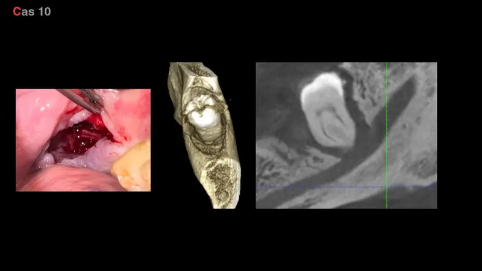
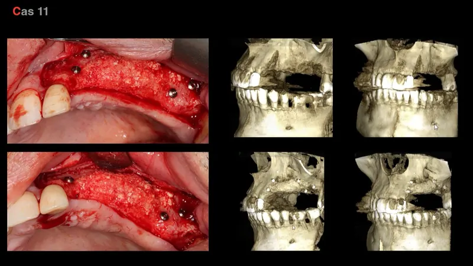
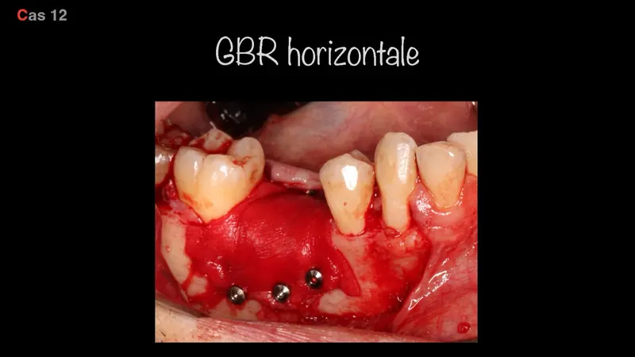
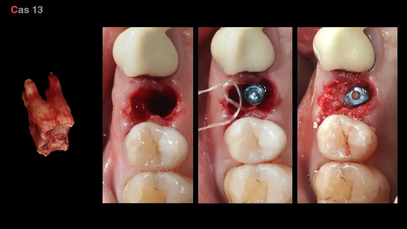
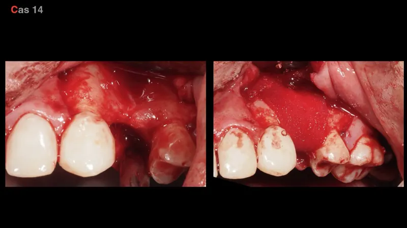
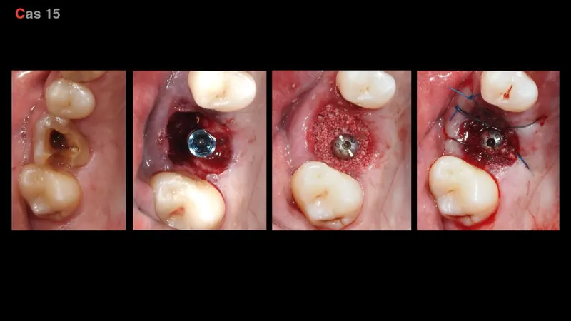
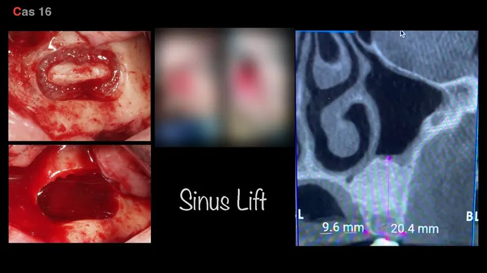
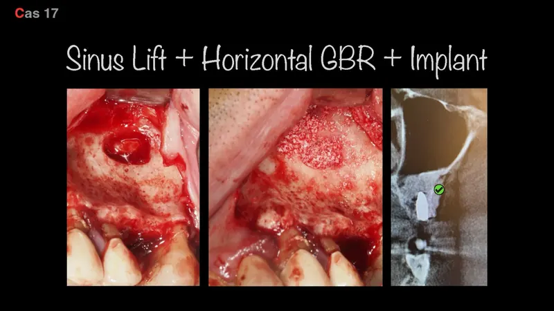
Book complet amb la documentació de cada cas (situació inicial, planificació, cirurgia i control) disponible sota petició per a professionals i centres.
Tempus Clínica Dental
Carrer Enric Granados, 6, 25008 Lleida
Disponible per a col·laboracions, derivacions i casos quirúrgics complexos.